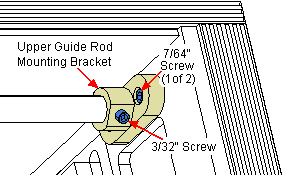

This procedure describes how to replace the linear bushing for the upper guide rod in the reagent storage module.
Replace the linear bushing for the upper guide rod in the reagent storage module when the gripper gantry x-motion is rough or hindered. Applying lithium grease to the guide rod can cause the bushing to swell and is often the cause of the rough gripper gantry motion.
Unload and refrigerate the reagent packs.
Select
Supplies > Reagent Supplies > Unload all Reagent Packs.
When the load tray opens with packs, remove them.
Place the removed packs into refrigerated storage.
Open the main upper right cover.
Switch off the upper switch on the Power Distribution PCB to remove power from the MCC boards.
Open the SPU.
Open the upper left cover of the instrument.
Loosen the locking screw.
The locking screw prevents the SPU from swinging outward from the instrument. It is not necessary to remove the screw because the SPU plate is slotted.
Remove the 3/16-in hex bolt located near the right end of the SPU cover.
Open the lower right access panel on the front of the instrument.
Pull the spring-loaded captive pin that holds the panel (located under the SPU) to the frame.
Grasping the SPU near the right end, swing the right end away from the instrument.
Warning: The SPU off-load area slides forward and rearward as the SPU is swung in and out. To prevent damage to the SPU or the off-load area, confirm that nothing obstructs the movement of the off-load area as the SPU is moved.
(For China and Canada Only.) On the front facing the edge of the Framus assembly, install the Chinese and French labels adjacent to the existing English label.
Note: The labels are in the DxI Installation Kit.
Prepare the instrument.
Remove the cover on the reagent storage module (six 5/32-in hex screws).
Manually move the gripper to the home position (lower left corner).
Remove the bushing-guide rod.
Remove the screws (four 7/64-in hex) securing the lower spline shaft.
The screws are located on the inside wall of the lower right corner near the right end of the spline shaft.
Hold the gripper gantry with your left hand, while twisting the z-drive motor with your right hand and pulling the entire assembly towards the right.
After the left-side bearing of the assembly is clear of the side plate, the gripper gantry will drop enough to clear the linear bushing.
Remove the screw (3/32-in hex) securing the right end of the upper guide rod to the mounting bracket.

Remove the screws (two 7/64-in hex) securing the mounting bracket to the right side plate.
Slide the bracket to the left, and remove the upper guide rod from the module.
Remove the linear bushing from the guide rod.
Clean the upper guide rod.
If the rod is corroded or rusted, use a Scotch-Bright® pad (or similar) and 3-in-1® oil to clean it.
Wipe the guide rod clean, using alcohol wipes or an absorbent tissue wetted with alcohol.
Apply a light coat of 3-in-1® oil to the shaft.
Install the replacement bushing.
Remove the retainer clip from the linear bushing that was removed.
Install the clip onto either end of the replacement bushing.
Slide the replacement bushing onto the upper guide rod, with the clip end of the bushing towards the left end of the guide rod.
Install the bushing-guide rod.
Slide the upper guide rod mounting bracket onto the right side of the guide rod.
Insert the left end of guide rod into the mounting hole on the left side plate of the reagent storage module.
Insert the mounting bracket and guide rod into the mounting hole on the right side plate.
Mount the bracket to the side plate using the two screws (7/64-in hex) from the removal process.
Fasten the guide rod to the bracket by lining up the mounting hole and using the screw (3/32-in hex) from the removal process.
Position the linear bushing over the gripper gantry, with the bushing retainer clip in-line with the groove on the top of the gripper gantry and the opening facing up.
Lift the gripper gantry into position. Slide the lower spline shaft to the left until the lower left bearing is seated into the hole in the lower left side plate.
Confirm that the bushing clip is seated correctly in the groove of the gripper gantry.
Position the lower spline shaft and z-motor. Secure the assembly to the lower right side plate using the four screws (7/64-in hex) from the removal process.
Verify operation of the reagent storage module.
Manually move the gripper the full length of both z-motion and x-motion to verify free movement.
Manually move the gripper to the home position (lower left corner).
Bypass the cover interlock switches on the SPU and reagent storage by taping them down.
Power on the MCC boards and reagent storage coolers.
Initialize the instrument with
Remap enabled.
Warning: Do not place your hands inside the storage module during initialization, the gripper and reagent load drawer will be moving.
Confirm that there were no gripper errors during the remap process.
Return the instrument to service.
Remove the tape from the interlock switches.
Install the cover on the reagent storage module (six 5/32-in hex screws).
Close the SPU.
The SPU is hinged on the left side. The right side is released and can be swung out from the instrument to approximately 45 degrees.
Warning: The SPU off-load area slides forward and rearward as the SPU is swung in and out. To prevent damage to the SPU or the off-load area, confirm that nothing obstructs the movement of the off-load area as the SPU is moved.
Grasping the SPU near the right end, swing the right end toward the instrument.
Pull the spring-loaded captive pin to attach the panel (located under the SPU) to the frame.
Close the lower right access panel on the front of the instrument.
Insert the 3/16-in hex bolt.
Tighten the bolt that holds the SPU from swinging outward from the instrument (locking screw).
Close the upper left cover of the instrument.
Note: Initialize the instrument after opening and closing the SPU, because a switch is actuated when the SPU is opened.
Load all the reagent packs that were removed from the storage module.